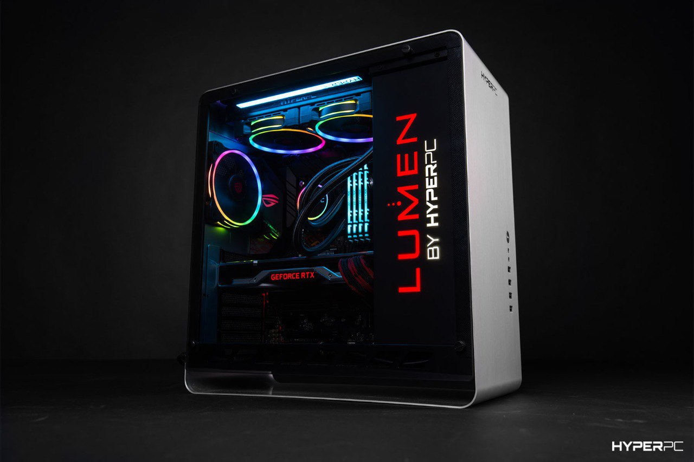

Надежный начального уровня компьютер, оснащенный быстрым процессором и высокоскоростной памятью, предназначенный для профессиональных приложений и эффективной многозадачности.
Комплектующие:
HYPERPC LUMEN

Бесспорная классика среди игровых компьютеров, построенная на базе графической карты MSI GeForce RTX 4060 Ti GAMING X [8GB, 4352 CUDA] и процессора Intel® Core™ i5-13400(F) [до 4.6GHz, 10 ядер].